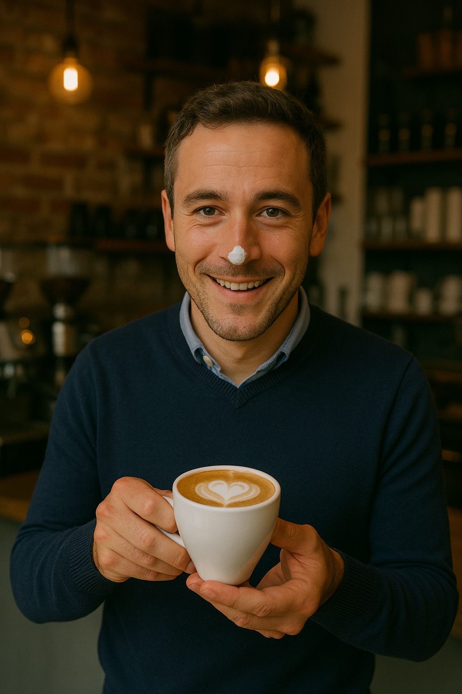
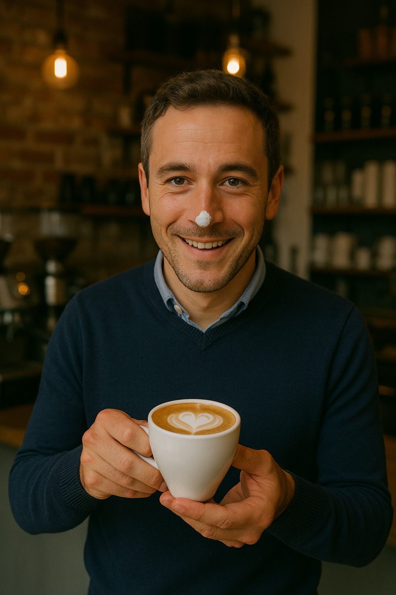

דוביק רוזן
מי אני?
בן 67, הרצליה, אלמן
מנטור ליזמים צעירים, מתנדב בעמותת הצלת כלבים, וכותב בלוג אישי על התחלה חדשה ואהבות מאוחרות.
רקע
נולדתי וגדלתי בקריית חיים לזוג מורים. שירתי כקצין במודיעין, ולאחר מכן למדתי הנדסת מחשבים בטכניון. אחרי סטארט-אפ ראשון שלא הצליח, בגיל 40 הקמתי חברה מצליחה שסיפקה פתרונות טכנולוגיים לחברות ביטוח ברחבי העולם.
רגיש, מצחיק, אוהב אדם ויודע להקשיב. קצת עקשן, אבל תמיד מתוך מקום של אכפתיות.
תחביבים
- טיולים עם כלבים (שלי ושל אחרים)
- ציור בצבעי מים
- משחק שחמט בפארק
- פודקאסטים על מדע ורוח
- ספרים על פסיכולוגיה חיובית
- יוקולילי (אפילו העליתי סרטונים ליוטיוב)
תחומי עניין
בני אדם, טבע, כלבים, חדשנות, ספרות עברית, היסטוריה יהודית.
דמות משפיעה
סבתא רחל – ניצולת שואה שלימדה אותי מה זו ענווה, עוצמה שקטה והומור שמרפא.
משפט שמגדיר אותי
"לא מאוחר מדי להתחיל מחדש – רק צריך להיות מוכן להתרגש שוב."
הנה אני
 

השיר האהוב עליי בכל העולם
גרמתי לך לחייך?
שלחי לחברה שלך מה יש בזה
Love Game
Fun Fact
לחצי על הכפתור כדי לגלות משהו חדש על דוביק!
אז נדבר?
Q&A
| Web1 | Web2 | Web3 | Static web pages - The contact was rarely updated or changed. Basic functionality - mainly text and images. | User generate contact - websites became more dynamic, with users able to contribute their own content. | If on Web1 only the developer could edit the page, and on Web2 also the user could edit the page, on Web3 another player joined the game - the AI.
Websites became more intelligent, with the ability to understand the context of content and provide more personalized experience for users. |
|---|---|---|
Use case example - facebook page would look like a static page. if you want to explore more about this person - you can't. all you can is to see his photos. This facebook page, also, was published by the developers and not the users. |
Use case example - now people could take care of their own facebook page, and upload some content and images |
Use case example - On Facebook, for example, the users now can explore other friends or content, based on their consumed content on the present. |